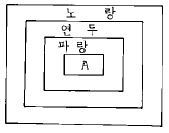
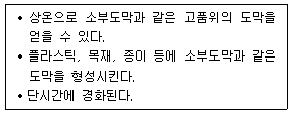
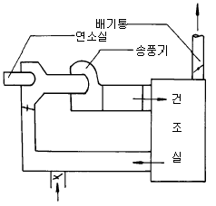
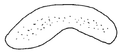

금속도장기능사 (2002-07-21 기출문제)
1과목: 색채
1. 색의 3속성이 아닌 것은?
- 색상
- 명도
- 채도
- 잔상
(정답률: 알수없음)

2. 다음 색 중 노랑의 보색은?
- 남색
- 빨강
- 주황
- 녹색
(정답률: 알수없음)
3. 먼셀표색계(표준20색상환)에서 채도가 가장 높은 색은?
- 노랑
- 청록
- 연두
- 자주
(정답률: 알수없음)
4. 색광혼합의 3원색은?
- 빨강 - 청록 - 노랑
- 빨강 - 녹색 - 자주
- 빨강 - 파랑 - 녹색
- 빨강 - 파랑 - 보라
(정답률: 알수없음)
5. 두가지의 색광을 혼합할 경우 혼합된 색은?
- 명도는 높아지고 채도는 낮아진다.
- 명도는 낮아지고 채도는 높아진다.
- 명도와 채도가 다 낮아진다.
- 명도와 채도가 다 높아진다.
(정답률: 알수없음)
6. 먼셀(Munsell)은 빨강을 5R 4/14로 표기하고 있는데 여기에서 4는?
- 색상
- 채도
- 명도
- 순도
(정답률: 알수없음)
7. 그림에서 A 부분을 들어가 보이게(후퇴) 하려면 어느 색이 가장 알맞는가?

- 주황
- 빨강
- 남색
- 다홍
(정답률: 알수없음)
8. 노랑과 빨강이 같이 있을 때 노랑은 연두색을 띤 노랑으로 빨강은 연지색을 띤 빨강으로 보이는 현상은?
- 채도 대비
- 명도 대비
- 색상 대비
- 계시 대비
(정답률: 알수없음)
9. 방화표지, 소화기, 화재 등에 사용하는 색은?
- 빨강
- 주황
- 파랑
- 녹색
(정답률: 알수없음)
10. 중성색 계통의 색상조화는?
- 주황과 연두
- 녹색과 연두
- 보라와 빨강
- 자주와 다홍
(정답률: 알수없음)
11. 전체 색조배색에서 오는 느낌에 대한 설명 중 맞는 것은?
- 색상이나 명도를 같게하면 전체적으로 활기있는 배색이 된다.
- 명도가 높은 색을 주로하면 무거운 느낌의 배색이 된다.
- 채도가 높은 색을 주로하면 수수하고 평정된 배색이 된다.
- 색상이나 채도차를 크게하면 자극적이며 활기있는 배색이 된다.
(정답률: 알수없음)
12. 다음중 가장 따뜻한 느낌을 주는 색들은?
- 연두, 보라, 자주
- 빨강, 자주, 파랑
- 노랑, 초록, 남색
- 주황, 노랑, 다홍
(정답률: 알수없음)
13. 유성니스 종류에 들지 않는 것은?
- 초산비닐니스
- 코우펄니스
- 흑바니시
- 코울드사이즈
(정답률: 알수없음)
14. 내열성, 전기절연성등이 특히 우수하여 석유난로, 보일러등에 많이 사용되고 있는 도료는?
- 멜라민 수지 도료
- 프탈산 수지 도료
- 열경화성 아크릴 수지 도료
- 실리콘 수지 도료
(정답률: 알수없음)
15. 다음 용제 중 용해성이 가장 좋은 용제는?
- 알콜계
- 케톤, 아세톤계
- 에스테르계
- 석유, 탈계
(정답률: 알수없음)
16. 알콜 가용성 페놀수지 도료와 관계가 없는 것은?
- 무색 또는 엷은 노란색으로 일광에 의해 변색되기 쉽다.
- 가열하면 100-150℃에서 용융된다.
- 탄화수소계 용제에 잘 녹는다.
- 알콜, 아세톤에 잘 녹는다.
(정답률: 알수없음)
17. 금속 화성처리에서 산비에 관한 설명이다. 틀린 것은?
- 산비=전산도/유리산도
- 유리산도는 액중의 유리인산의 농도를 나타낸다.
- 산비가 적으면 제1인산이 가수분해하여 침전 부식작용이 있다.
- 산비는 처리목적, 온도에 따라 변한다.
(정답률: 알수없음)
18. 다음은 화성처리 피막중 인산염의 중량에 대한 설명이다. 틀린 것은?
- 인산철계는 1.0-1.5g/m2이다.
- 인산아연계 박막형은 1.5-3g/m2이다.
- 인산아연계 중막형은 3-6g/m2이다.
- 인산아연계 후막형은 10-20g/m2이다.
(정답률: 알수없음)
19. 스프레이 도장시에 도료점도는 20℃에서 포드컵 No.4로 어느 정도 되어야 하는가? (단, 래커도장시)
- 1-3 sec
- 18-25 sec
- 45-60 sec
- 65-80 sec
(정답률: 알수없음)
20. 체질안료에 속하지 않는 것은?
- 연단
- 탈크
- 호분
- 황산바륨
(정답률: 알수없음)
2과목: 금속도장재료
21. 식물성 탄화수소계 용제는?
- 메탄올
- 아세톤
- 에테르
- 테레핀유
(정답률: 알수없음)
22. 다음과 같은 특성을 가진 도료는?

- EBC도료
- UVC도료
- 분체도료
- 에멀젼도료
(정답률: 알수없음)
23. 철강 표면의 기름을 제거하는 방법 중 잘못된 것은?
- 에멀션 세척
- 알칼리 세척
- 신너 세척
- 염산 처리
(정답률: 알수없음)
24. 래커 프라이머에 관한 설명 중 잘못 기술된 것은?
- 산화철,산화티탄이 포함된다.
- 건조가 대단히 빠르다.
- 내후성,부착성이 우수하다.
- 니트로셀룰로오스를 전색제로 한다.
(정답률: 알수없음)
25. 서페이서에 대한 설명 중 맞지 않는 것은?
- 살갖임이 좋아야 한다.
- 하지의 마무리 도료이다.
- 연마성이 좋아야 한다.
- 바탕조정 목적 도료이다.
(정답률: 알수없음)
26. 유성바니스 중에서 중유성 바니스는?
- 코우펄 바니스
- 코울드 바니스
- 스파 바니스
- 콜드사이즈
(정답률: 알수없음)
27. 도막형성 주요소에 대한 설명 중 틀린 것은?
- 주요소는 지방유, 합성수지, 천연수지 등이다.
- 도막을 형성하는 주요소는 도막의 최종적인 목적인 주성분이 되는 물질이다.
- 도막을 형성하는 주요소는 도막의 성능을 향상시키기 위해 첨가되는 물질이다.
- 주요소에서 지방유에 속하는 것은 건성유이다.
(정답률: 알수없음)
28. 퍼티도장에 대한 설명 중 옳지 않은 것은?
- 표면의 홈을 평활하게 하는 작업이다.
- 오일퍼티는 건조가 늦다.
- 래커퍼티는 건조가 빠르다.
- 폴리에스테르 퍼티는 알키드 수지가 전색제이다.
(정답률: 알수없음)
29. 다음 안료 중 독성이 있어 선저도료의 원료로 사용되며 선저부분에 굴, 조개류, 해초류 등이 부착되지 않도록 하기 위해 사용되는 안료는?
- 산화수은
- 아산화동
- 산화안티몬
- 탄산칼슘
(정답률: 알수없음)
30. 철강의 조직 중 산에 부식되지 않고 경도가 가장 큰 것은?
- 펄라이트
- 페라이트
- 시멘타이트
- 오오스테나이트
(정답률: 알수없음)
31. 탈지방법 중 화학적 방법이 아닌 것은?
- 알칼리 세척법
- 블라스트법
- 에멀션 세척법
- 전해 세척법
(정답률: 알수없음)
32. 도면과 같은 열풍건조로는 무슨 방식인가?

- 직접순환식
- 간접순환식
- 직접 비순환식
- 간접 비순환식
(정답률: 알수없음)
33. 적외선 건조로에 대한 설명 중 적합치 못한 것은?
- 취급이 간편하고 재해가 적다.
- 열효율이 좋고 건조가 빠르다.
- 비교적 위생적이다.
- 물체의 형상에 영향을 주지 않는다.
(정답률: 알수없음)
34. 래커 마무리 도장(상도)에 있어서 스프레이 건의 노즐 구경이 적당한 것은?
- 0.5 - 0.8 mm
- 1 - 1.2 mm
- 2.0 - 2.5 mm
- 3.0 - 3.5 mm
(정답률: 알수없음)
35. 스프레이 건(spray gun)의 청소시 주의 사항에 어긋나는 것은?
- 사용후에는 알칼리 세제를 사용해서는 안된다.
- 신너에 건을 침적시켜 부푼 후에 청소한다.
- 니들이 더러울 때는 분해하여 씻는다.
- 건은 필요할 때 이외는 분해하지 않는다.
(정답률: 알수없음)
36. 스프레이 건(Spray Gun)의 내부 혼합형에 대한 설명 중 옳지 않은 것은?
- 도료는 압송식으로 공급한다.
- 고점도 도료도 사용할 수 있다.
- 패턴은 둥근형과 평형이 있다.
- 공기캡의 내측에서 도료와 공기를 혼합한다.
(정답률: 알수없음)
37. 다음중 에어리스 스프레이 도장의 특징이 아닌 것은?
- 에어스프레이에 비하여 도장 표면이 미려하다.
- 에어스프레이에 비하여 도료손실이 적다.
- 1회 도장으로 두꺼운 도장을 할 수 있다.
- 작업능률이 우수하다.
(정답률: 알수없음)
38. 호트스프레이컵(hot spray cup)의 공급 열원은?
- 전기열선
- 가스버너
- 열풍
- 온수
(정답률: 알수없음)
39. 오렌지필 현상이 발생하였다. 그 원인과 관계 없는 것은?
- 용해력이 불충분한 신너를 사용 하였다.
- 스프레이 공기 압력이 약했다.
- 도막이 지나치게 두터웠다.
- 실내 온도가 높고 풍속이 빨랐다.
(정답률: 알수없음)
40. 폴리에스테르 수지도료의 보관법으로 옳은 것은?
- 경화제와 촉진제를 혼합하여 보관한다.
- 어두운 곳이라면 어디라도 보관이 가능하다.
- 열이나 빛에 의하여 중합되기 쉬우므로 냉암소에 보관한다.
- 조합한 것을 사용가능 시간을 넘겨 방치할 때에는 밀봉을 한다.
(정답률: 알수없음)
3과목: 금속도장
41. 공기압축기 시동시 유의사항 중 잘못된 것은?
- 계절에 적당한 오일을 넣고 시동전 오일을 점검한다.
- 주위를 살펴보고 안전을 확인한 다음 스위치를 넣는다.
- 흡기구에 손을 대고 흡입 상태를 확인한다.
- 부하 상태로 스위치를 넣는다.
(정답률: 알수없음)
42. 다음 유해가스 중 인체에 가장 해로운 것은?
- 아세톤
- 염소
- 암모니아
- 가솔린
(정답률: 알수없음)
43. 휘발성 용제는 취급에 주의를 하여야 하는데 위험성과 가장 관계가 없는 것은?
- 인화점
- 폭발범위
- 발화점
- 빙점
(정답률: 알수없음)
44. 알칼리 탈지의 장점이 아닌 것은?
- 심한 먼지와 때도 탈지한다.
- 기름 이외의 오물도 제거한다.
- 수세가 불충분해도 화성피막에 영향을 주지 않는다.
- 액의 수명이 길다.
(정답률: 알수없음)
45. 퍼티를 도포하는 방법으로 가장 좋은 것은?
- 주걱 각도를 15° 로 계속 유지하며 도포한다.
- 주걱 각도를 15° 로 하였다가 각도를 점점 높이면서 도포한다.
- 주걱 각도를 35∼45° 로 하였다가 각도를 점점 높인다.
- 주걱 각도를 35∼45° 로 하였다가 각도를 점점 낮춘다.
(정답률: 알수없음)
46. 적외선 건조로의 취급방법이 잘못된 것은?
- 온도조절을 위해서 전압조정기를 사용한다.
- 물체에 광택이 없을 때는 콘베이어 속도를 늦춘다.
- 노내부의 반사판은 더러워지기전에 청소하는 것이 좋다.
- 노에 물체를 처음 넣은 5분 정도는 100℃까지 올라가지 않도록 한다.
(정답률: 알수없음)
47. 도막 표면의 경도(hardness)가 낮은 가장 큰 이유는?
- 피도장물의 소지가 얇을 때
- 도막이 얇고 소부건조 시간이 길 때
- 소부건조 온도가 낮고 소부건조 시간이 짧을 때
- 도료의 미립화가 양호할 때
(정답률: 알수없음)
48. 에어 스프레이 건(Air Spray Gun)에서 도료 분무 패턴을 조절하는 나사는?
- 니들 조절 나사
- 에어(air) 조절 나사
- 에어(air) 밸브 나사
- 노즐 조절 나사
(정답률: 알수없음)
49. 분체 도장의 장점에 관한 설명 중 틀린 것은?
- 세팅 시간이 필요 없다.
- 비산된 도료는 회수하여 다시 사용한다.
- 도막이 얇게 오른다.
- 다소 피도체가 복잡해도 도막은 균일하다.
(정답률: 알수없음)
50. 다음은 굴곡 시험기에 대한 사항이다. 옳지 않은 것은?
- 도막 파괴 신장이 크면 내굴곡성이 나쁘다.
- 도막 파괴 신장과 온도의 관계가 도막 성질에 큰 영향을 미친다.
- 판정은 각종 직경의 중심봉에 대해서 시험하고 도막의 파괴 신장을 구하여 평가한다.
- 절단 가공을 행하는 제품은 내굴곡성이 좋을수록 좋다.
(정답률: 알수없음)
51. 다음 중 폭발 상한 농도(Vol.％)가 가장 높은 것은?
- 메틸에틸케톤(M.E.K)
- 이소프로필알콜(I.P.A)
- 톨루엔
- 키실렌(XYLENE)
(정답률: 알수없음)
52. 분무시 다음과 같은 패턴현상이 발생되었을 때 가장 큰 원인은?

- 공기캡의 한쪽 구멍이 막혀 있다.
- 공기 압력이 낮다.
- 공기 압력이 높다.
- 공기캡과 노즐간격이 크다.
(정답률: 알수없음)
53. 롤러브러쉬의 커버용 털의 종류 중 거친면이나 휘어진 곡면 도장에 적당한 것은?
- 단모(10mm이하)
- 중모(10∼20mm)
- 장모(20∼40mm)
- 절모(15∼30mm)
(정답률: 알수없음)
54. 다음은 도장 공정에 있어서 상도에 대한 설명을 하였다. 옳지 않은 것은?
- 가능하다면 붓 도장보다는 분무 도장을 사용하는 것이 훨씬 우수한 도막을 얻을 수 있다.
- 상도 도포 후에 먼지가 부착되어 있을 때에는 신중 하게 재벌 도장하여 마무리 한다.
- 오물이 없고 통풍이 잘 되는 곳에서 도포한다.
- 붓 도장을 행할시에는 붓은 많이 사용하던 붓을 사용하고 얼룩 손질도 충분히 해야 한다.
(정답률: 알수없음)
55. 다음은 주걱 도장에 있어서 각 종류별 주걱과 그 용도에 대한 설명이다. 틀린 것은?
- 나무 주걱은 주로 삼각형으로 퍼티 붙임 등에 사용된다.
- 대나무 주걱은 나무의 홈이 파인 부분 보수에 사용된다.
- 금속 주걱은 주로 사다리꼴형이 많으며 퍼티의 반죽에 적합하다.
- 고무 주걱은 합성고무를 재료로 사용하고 각진 부분 또는 모서리면을 바를 때 사용된다.
(정답률: 알수없음)
56. 다음 도료의 시험법 중에 유출식 점도계에 속하지 않는 것은?
- 오스왈드 점도계
- 레드우드 점도계
- 포드컵 점도계
- 스토머 점도계
(정답률: 알수없음)
57. 아연 도금 강판에 대한 피막처리로 사용되는 것이 아닌 것은?
- 인산아연 처리법
- 수산염 피막처리법
- 크로메이트 처리법
- 논크로메이트 처리법
(정답률: 알수없음)
58. 톱 코팅(Top coating)의 흡수를 방지하여 광택과 선명성을 부여하고 전체 도막의 내구성 및 내수성을 향상시킴과 동시에 평활성을 부여하는 도장 공정은?
- 투명도장
- 상도도장
- 중도도장
- 하도도장
(정답률: 알수없음)
59. 도장하지용 화성피막이 갖추어야 할 조건이 아닌 것은?
- 방청작용이 강할 것
- 소지금속 및 도막과의 부착성이 강할 것
- 내열성이 있을 것
- 두꺼운 피막이 형성될 것
(정답률: 알수없음)
60. 주름(Wrinkling) 현상의 원인으로 옳지 않은 것은?
- 너무 두껍게 도장 했을 때
- 도료의 점도가 높을 때
- 건조가 미흡한 도막 위에 재 도장할 때
- 용해력이 강한 신너를 과량 투입할 때
(정답률: 알수없음)